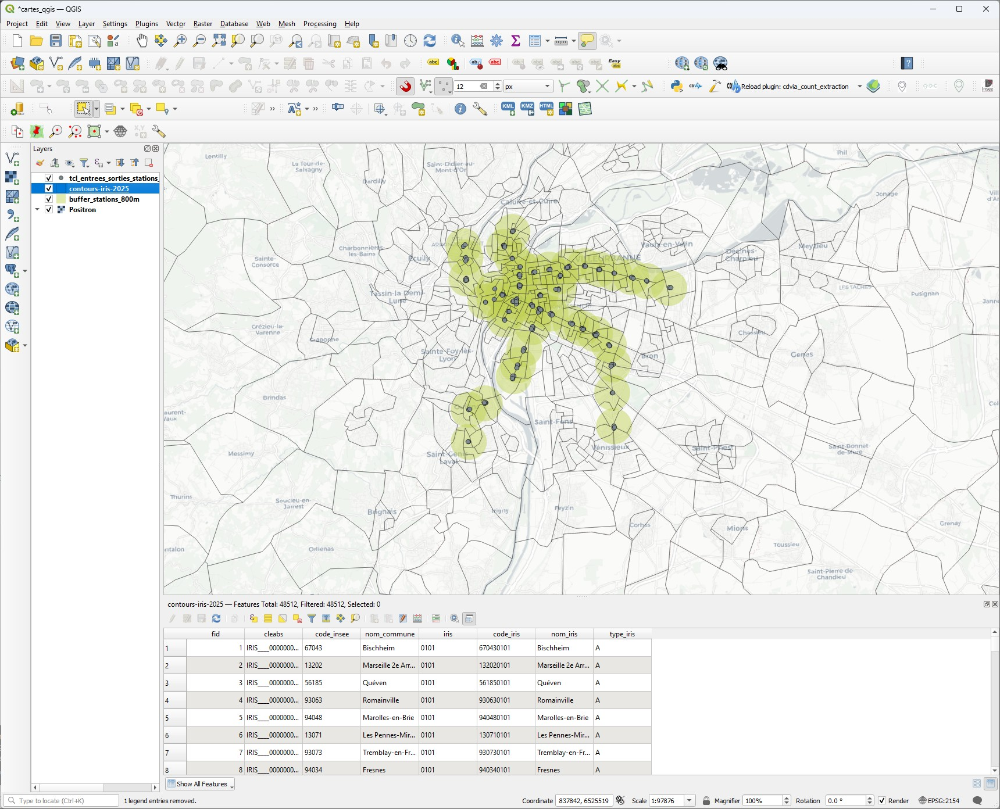
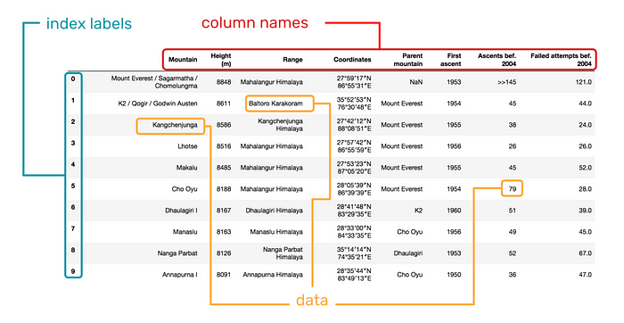
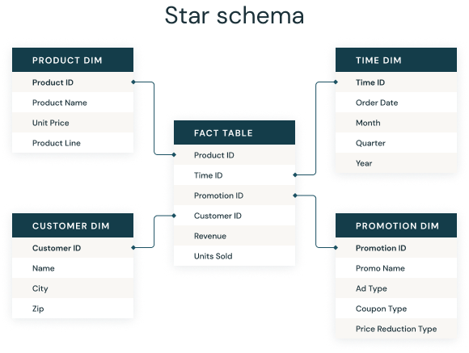
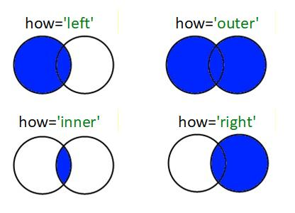
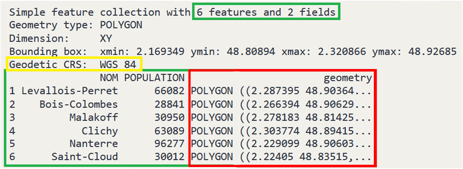
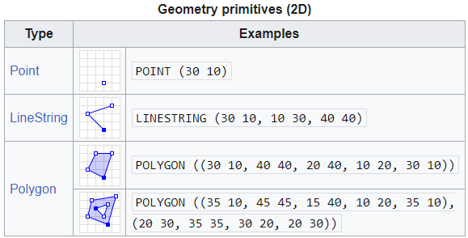
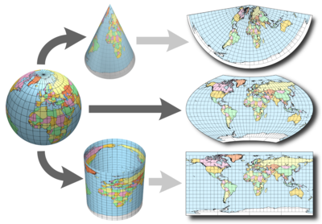
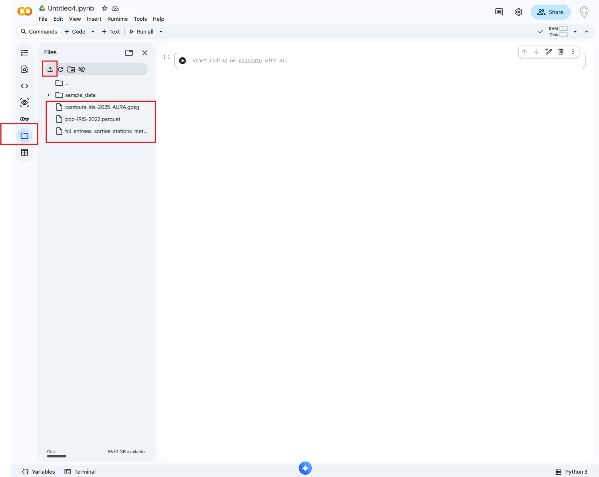

# # Exemple simple:
import pandas as pd
df = pd.DataFrame({'year': [2012, 2014, 2013, 2014], 'month': [1, 4, 7, 10], 'sale': [55, 40, 84, 31]})
df.set_index('month', inplace=True, drop=True)
print(f'year:\n{df.year}\n')
print(f".loc:\n{df.loc[10, 'year']}\n")
print(f'.iloc:\n{df.iloc[0, 1]}\n')
df.loc[:, 'sale']
Introduction à
12/02/2026 - Daniel Marin (dmarin@open-dc.com)
Objet de la formation: Prise en main de la librairie GeoPandas du langage Python pour le traitement et la visualisation de données géographiques: > Affichage de cartes
> Fusion avec des sources de données externes
> Opérations géographiques (zones tampon, intersections de zones etc.)
Pré-requis: - Bases en programmation Python - Adresse gmail valide (pour le développement sous Google Colab) - Optionnel: Logiciel QGIS installé (pour la visualisation et la mise en forme des données) pour aller plus loin sur la mise en forme
Liens et sources de données
- Nombreux visuels et exemples tirés du cours de 2ème année d’ENSAE Python pour la data science de Lino Galiana1.
- Documentation
Pandas - Documentation
GeoPandas - Sources de données:
Tous les fichiers allégés pour les besoins de l’exercice sont disponibles en téléchargement local ici.
1er développement sur Google Colab
Intérêt de Google Colab: - Pas d’installation locale de Python - Gratuit et accessible à tout le monde, sous réserve de disposer d’une adresse Gmail - Développement dans le navigateur ==> pas d’installation d’IDE nécessaire - Environnement Jupyter Notebook intégré - Partage facile de scripts.
Inconvénients: - Fonctionnement en ligne uniquement - Non adapté pour de gros projets (multiples fichiers) - Non adapté pour des traitements confidentiels (serveurs Google)
💡Autres solutions: - SPP Cloud pour les agents de la fonction publique française (Étapes ici). - Installation d’un IDE (Pycharm ou VS Code par exemple) et d’un exécutable Python pour les utilisateurs Windows (Python étant installé par défaut sur Mac et Linux)
Note: L’installation de Pycharm ou VS Code propose une installation de Python en parallèle.
Présentation (très succincte) de QGIS
- Système d’Information Géographique (SIG).
- Permet de réaliser des cartes, traiter des données géographiques, les mettre et forme et les communiquer.
- Logiciel libre, 100% ouvert et gratuit.
💡La plupart des opérations réalisables avec GeoPandas (buffers, calculs de distance, de surfaces etc.) le sont via l’interface de QGIS. L’utilisation de GeoPandas permet de chaîner ces opérations dans un script Python, ce qui rend entre autres le process plus reproductible.
💡💡Pour aller plus loin: Tutoriel QGIS

Illustration des données de zones tampons autour des stations du métro lyonnais produites dans ce tutoriel, visualisées sous
QGIS
Rappels de base de programmation Python
Note: On ne revient pas ici sur les notions de base de programmation telles que les variables, fonctions, boucles, conditions. On se concentre sur les spécificités de Python par rapport aux autres langages.
Types de base
Les types de base: ‘int’, ‘float’, ‘str’
a = 2
b = 3.14
c = 'texte'
print(f'a={a}, b={b}, c={c}')
# # Les variables ne sont pas figées à un type donné:
a = 'texte' # a passe de 'int' à 'str' sans problème
print(f'new a={a}')Listes, tuples, dictionnaires et sets
li = [1, 2, 3] # `list`: []
print(f'type li: {type(li)}\n{li}')
tu = (1, 2, 3) # `tuple`: ()
print(f'type lu: {type(tu)}\n{tu}')
di = {'a': 1, 'b': 2, 'c': 3} # `dict`: {}
print(f'type di: {type(di)}\n{di}')
st = set([1, 2, 3]) # `set`: set([...]) ou {1, 2, 3}
print(f'type st: {type(st)}\n{st}')Listes
li = [2, 4, 3] # liste de 3 éléments
print(li)
print(f'1ère valeur: {li[0]}') # l'index commence à 0
li.sort() # tri la liste
print(li)
li.append(5) # ajoute un élément
print(li)
li.extend([6, 7]) # ajoute une liste à la liste
print(li)
li.pop(4) # retire le 4ème élément de la liste (et non l'élément 4 de la liste!)
print(li)
# # boucle sur les éléments:
for el in li:
print(el)
# # boucle avec conservation des index:
for ix, el in enumerate(li):
print(f'index {ix}, valeur: {el}')
# # Comprehension lists:
li = [i for i in range(10) if i%2 == 0]Dictionnaires
my_dict = {key1: val1, key2: val2}
di = {'nom': 'Crusoé', 'prénom': 'Robinson', 'âge': 42}
print(di)
di['nom'] = 'Stévenin' # les clés sont uniques
print(di)
prenom = di.get('prénom', '???') # clé existante
adresse = di.get('adresse', '???') # clé manquante
print(f'prénom:\t{prenom},\nadresse:\t{adresse}')Tuples
tu = (49.4545, 2.4545) # tuple à 2 éléments
print(f'{tu[0]}, {tu[1]}')
# tu[2] = 0 # le nombre d'éléments d'un tuple est invariable (pas de méthodes `append` ou `pop`)
# tu[1] = 0 # le contenu d'un tuple n'est pas modifiableSets
💡 Ensemble d’éléments uniques
st = {1, 3, 1, 2}
print(st)
st.add(4)
print(st)
st.pop() # retire le premier élément
print(st)
st.remove(3) # retire un élément donné
print(st)Mutabilité
La mutabilité est la possibilité de changer le contenu d’une variable en conservant l’adresse mémoire de cette variable. En Python, seuls les types de base int, float, bool et str ainsi que les tuple ne sont pas mutables. En pratique, cela se traduit par le fait que lorsque l’on assigne une variable a à une nouvelle variable b, le fait de changer le contenu de b: * n’aura aucun impact sur a si a est de type int, float, bool ou str (la nouvelle assignation a créé une nouvelle adresse mémoire pour la variable b, qui n’est plus reliée à a d’aucune manière) * changera le contenu de a si a est de tout autre type (excepté tuple) (la nouvelle assignation utilise la même adresse mémoire pour la variable b que pour la variable a, ainsi modifier a ou b modifie en réalité un seul et même objet)
Les tuples ne sont pas mutables dans le sens où on ne peut changer leur contenu ou nombre d’éléments après leur initialisation.
a = 2
b = a
b = 3
print(f'a: {a}, b: {b}') # le contenu de a n'a pas changé: une copie de a a été réalisée pour être alouée à b (idem si a est un float ou str)
li1 = [1, 2]
print(f'li1: {li1}')
li2 = li1
li2[0] = 0
print(f'li2: {li2}\nli1: {li1}') # le contenu de li1 a été modifié lorsque li2 a été modifié
# # Solution: créer une copie de l'objet mutable:
li3 = li1.copy()
li3[0] = 30
print(f'li3: {li3}\nli1: {li1}') # le contenu de li1 n'a pas été modifié lorsque li3 a été modifié💡Les objets Pandas et GeoPandas qu’on verra par la suite sont mutables comme tous les objets Python, donc attention aux copies d’objets et ce qu’on en fait par la suite!
Utilisation de modules
Installation d’un module
💡 Uniquement pour les modules non natifs (ex de modules natifs: datetime, os, re etc.)
Dans le terminal:
pip install mon_module # example: pip install geopandasDans Jupyter:
!pip install mon_module # notez le "!"Import de modules
💡 Toujours en tête de fichier
import numpy as np # et jamais "from numpy import *"!
import pandas as pd
df = pd.read_csv('https://www.insee.fr/fr/statistiques/fichier/6800675/v_commune_2023.csv')
# reste du code...Introduction à Pandas
Pandas: librairie “mère” deGeoPandas. LibrairiePythonde base pour l’analyse de données, téléchargée 5 millions de fois par jour.- Permet le traitement de données tabulaires

source: https://x.com/epfl_exts/status/997506000600084480
💡 GeoPandas = Pandas + opérations géographiques
💡💡 Toutes les manipulations de cette partie fonctionnent aussi avec GeoPandas.
Serie: objet vecteur pandasDataframe: matrice ==> ensemble deSeries. Les différentes colonnes peuvent être de types mixtes.- Formats de de fichiers pour l’import de données:
csv(méthoderead_csv())parquet(méthoderead_parquet())json(méthoderead_json())txt(méthoderead_csv())zip(méthoderead_csv())excel(méthoderead_excel())html(méthoderead_html())SQL DB(méthoderead_sql())- etc.
Exemple: Lecture d’un fichier csv disponible via une url publique:
import pandas as pd
df = pd.read_csv('https://www.insee.fr/fr/statistiques/fichier/6800675/v_commune_2023.csv')
df.head()Indexation
# # colonnes pour une condition donnée:
df.loc[df['column1']=='valeur', ['column2', 'column3']]
# # Ensemble de la colonne:
df.column1 # ne fonctionne que si les colonnes n'ont pas d'espaces ou caractères spéciaux
# # ou:
df['column1'] # renvoie une `Serie`
df[['column1']] # renvoie un `DataFrame` à une colonne
# # Accéder aux lignes:
df.iloc[0, 3] # accès par numéro d'index: 1ère ligne, 4ème colonne. Attention à la mise à jour des index!
df.loc['nom_index', 'nom_colonne'] # accès par nom d'indexStatistiques descriptives
df['column'].count()
df['column'].sum()
df['column'].min()
df['column'].max()
df['column'].mean()
df['column'].std()
df['column'].nunique()
df['column'].unique()
# etc.Fusions (merge)

Source: Databricks

- Exemple avec champ commun dans les deux tables:
df_merged = df_left.merge(df_right, on='key', how='left') # (how=‘inner’, ‘left’, ‘right’ ou ‘outer’)- Exemple avec champs de noms différents dans les deux tables mais représentant la même donnée:
df_merged = df_left.merge(df_right, left_on='key_left', right_on='key_right', how='left') # (how=‘inner’, ‘left’, ‘right’ ou ‘outer’)
# # Exemple `merge`:
import pandas as pd
df_sale = pd.DataFrame({'year': [2012, 2014, 2013, 2014], 'month': [1, 4, 7, 10], 'sale': [55, 40, 84, 31]})
df_purchase = pd.DataFrame({'year': [2012, 2014, 2013, 2014], 'month': [1, 4, 7, 12], 'purchase': [45, 30, 90, 25]})
df_balance = df_sale.merge(df_purchase, on=['year', 'month'], how='left') # jointure sur un ou plusieurs champs
print('Left join:')
display(df_balance)
df_balance = df_sale.merge(df_purchase, on=['year', 'month'], how='right')
print('Right join:')
display(df_balance)
df_balance = df_sale.merge(df_purchase, on=['year', 'month'], how='inner')
print('Inner join:')
display(df_balance)
df_balance = df_sale.merge(df_purchase, on=['year', 'month'], how='outer')
print('Outer join:')
display(df_balance)
Aggrégation (groupby)
df_grouped = df.groupby(by='col_group', as_index=False)['col_operation'].mean()- Opérations possibles:
.count().mean().sum().min().max().std().median().var().prod().first().last().nunique()- …
GeoPandas
💡DataFrame avec une colonne geometry (nom de colonne fixe)

Formats de fichiers:
Type Extension Commentaires Shapefile(4 fichiers: .shp+.dbf+.shx+.prj)Format le plus courant mais sur le déclain du fait de la contrainte “multi-fichiers” Geopackage(.gpkg) 💡à privilégier sous QGISGeoparquet(.parquet) 💡à privilégier en développement PythonGeoJSON(.geojson) 💡à privilégier en développement web WKT(.csv) 💡à privilégier pour construction “à la main” etc.

Systèmes de projection

- Systèmes de projection:
- Coordonnées sphériques: GPS: longitude latitude:
WGS84(EPSG 4326):- Toute donnée issue d’un système GPS: Même système quel que soit l’emplacement sur le globe.
- Toute donnée issue d’un système GPS: Même système quel que soit l’emplacement sur le globe.
- Coordonnées projetées:
- Cartes Google Maps:
Mercator: EPSG 3857: Même système quel que soit l’emplacement sur le globe mais fortes distorsions de surfaces aux pôles. - France métropolitaine:
Lambert 93: EPSG 2154: Système valable uniquement en France métropolitaine.
- Cartes Google Maps:
- Coordonnées sphériques: GPS: longitude latitude:
- Attribut:
gdf.crs
- Méthodes:
gdf.set_crs(epsg=2154)(à éviter habituellement!)gdf.to_crs(epsg=2154)
Commandes utiles
import geopandas as gpd💡 Dans les exemples ci-dessous: - gpd est l’alias du module GeoPandas - gdf est une variable de type GeoDataFrame
| Méthode | Description |
|---|---|
gpd.read_file |
Charge tout type de fichiers SIG, sauf le format parquet. |
gpd.read_parquet |
Charge les fichiers au format parquet. |
gdf.to_crs(epsg=2154) |
Convertit le systéme de coordonnées. |
gdf.plot() |
Affichage brut sans mise en forme. |
gpd.overlay(gdf1, gdf2, how="intersection") |
Combinaison spatiale de 2 geodataframes. Opérations possibles: intersection, union, difference, symmetric_difference |
gdf1.sjoin(gdf2, predicate='within') |
Jointure spatiale. Opérations possibles: within, intersects, contains, touches |
gdf.geometry.buffer(distance=1000) |
Renvoie une géométrie buffurisée (zone tampon). |
gdf.dissolve(by='field_agg') |
Fusionne des géométries ayant le même attribut. |
gdf.to_file('path_to_output.gpkg') |
Exporte dans un fichier SIG. Le format est défini par l’extention du nom de fichier de sortie. |
Exercice GeoPandas
Installations préalables
- Télécharger les données de l’exercice
- Ouvrir Colab et créer un nouveau Notebook (
New Notebook) - Charger les fichiers téléchargés dans l’environnement
Colab(Volet de gaucheFilespuisUpload to the session storage)

Note: Il se peut que certains modules ne soient pas installés dans votre session Colab. Dans ce cas, lancer comme indiqué ci-dessous les installations de modules complémentaires nécessaires à la réalisation des exercices:
!pip install pyarrow # pour le traitement des fichiers `parquet`
!pip install contextily # pour la superposition de cartes sur des fonds de carte OpenStreetMap, Google etc.
!pip install mapclassify # pour l'affichage de données quantitatives sur des cartes# # Imports (lancer les installations ci-dessus si certains modules sont manquants)
import pandas as pd
import geopandas as gpd
import contextily as cx # pour la gestion des fonds de carte
import matplotlib.pyplot as plt # pour la gestion du graphiquePré-traitement de la donnée
Opérations de téléchargement de la donnée complète et de réduction pour les besoins de l’exercice. Réalisé en amont, à ne pas relancer. Ici pour info
# # # Code de réduction de taille des fichiers pour les exercices des IRIS de la région AURA uniquement.
# import pandas as pd
# import geopandas as gpd
#
# gdf_iris = gpd.read_parquet('./data/contours-iris-2025.parquet')
# df_lkp_dept = pd.read_csv('./data/lkp_dept_region.csv', sep=';', encoding='ansi')
# # # Ajout code département depuis codes commune:
# gdf_iris.loc[:, 'com'] = gdf_iris.loc[:, 'code_insee'].str.zfill(5)
# gdf_iris.loc[:, 'DEP'] = gdf_iris.loc[:, 'com'].str[0:2]
# # # Récupération code région depuis table de correspondance départements / région:
# gdf_iris = gdf_iris.merge(df_lkp_dept, on='DEP', how='left')
# # # Extraction AURA et export:
# gdf_iris_aura = gdf_iris.loc[gdf_iris['REG_NEW_ID']==84]
# gdf_iris_aura.to_file('/content/contours-iris-2025_AURA.gpkg')
#
# # # Récupération des données de population
# df_pop = pd.read_csv('./data/pop-IRIS-2022.csv', sep=';', low_memory=False)
# df_pop.loc[:, 'com'] = df_pop.loc[:, 'COM'].astype(str).str.zfill(5)
# df_pop.loc[:, 'DEP'] = df_pop.loc[:, 'com'].str[0:2]
# df_pop = df_pop[['IRIS', 'DEP', 'com', 'P22_POP']]
# df_pop = df_pop.merge(df_lkp_dept[['DEP', 'REG_NEW_ID']], on='DEP', how='left')
# df_pop.to_parquet('/content/pop-IRIS-2022.parquet')
# df_pop.head()Affichage de cartes
Affichage simple
# # Chargement de la couche: méthode `read_file` pour la majorité des fichiers SIG, `read_parquet` pour des fichiers parquet
gdf_iris = gpd.read_file('/content/contours-iris-2025_AURA.gpkg')
gdf_iris.plot()
gdf_iris.head(2)Affichage avec fond de carte (nécessite une connexion internet)
# # Projection en Web Mercator (CRS des fonds de carte)
gdf = gdf_iris.to_crs(epsg=3857)
# # Définition du graphique:
ax = gdf.plot(
figsize=(10, 10),
alpha=0.7, # niveau de transparence (0 ==> transparent)
facecolor="none", # Pas de remplissage des IRIS
edgecolor="black", # contour des IRIS
linewidth=0.5, # contour des IRIS
)
# # Retire la graduation des axes:
ax.set_axis_off()
# # Ajout du fond de carte:
cx.add_basemap(
ax,
source=cx.providers.CartoDB.Positron # autre source pour autre type de fond de carte
)
plt.show()Représentation de données quantitatives
gdf_iris = gpd.read_file('/content/contours-iris-2025_AURA.gpkg')
df_pop = pd.read_parquet('/content/pop-IRIS-2022.parquet')
# # Avant fusion sur une clé commune ('IRIS' dans df_pop et 'iris' and gdf_iris), vérifier la cohérence des types:
print(f'types df pop: {df_pop["IRIS"].dtype}')
print(f'types gdf iris: {gdf_iris["code_iris"].dtype}')
# # Si types différents (ex: 'object' (string) et 'int64'), alors conversion nécessaire avant fusion
gdf_iris = gdf_iris.merge(df_pop[['IRIS', 'P22_POP']], left_on='code_iris', right_on='IRIS', how='left').drop(columns=['IRIS'])
# # Affichage de la population en dégradé de couleur
fig, ax = plt.subplots(figsize=(10, 10))
gdf_iris.plot(
column="P22_POP", # le champ de données quantitatives à afficher
scheme="NaturalBreaks", # la façon de définir les tranches de couleurs pour la légende
k=5, # le nombre de tranches de couleurs
cmap="OrRd", # la gamme de couleurs (cf documentation de matplotlib pour l'ensemble des gammes)
legend=True,
ax=ax,
alpha=0.8
)
cx.add_basemap(ax, source=cx.providers.CartoDB.Positron)
ax.set_axis_off()
plt.show()Création de cartes
On souhaite ici créer une carte au département plutôt qu’à l’IRIS. 💡Intérêt de la manip: > On ne conserve qu’une seule donnée source (le fond de carte IRIS), et on reconstruit les cartes de communes, départements, communautés de communes etc. en fonction de cette même base. > Les frontières de chaque découpage administratif coïncident parfaitement
gdf_iris = gpd.read_file('/content/contours-iris-2025_AURA.gpkg')
gdf_dept = gdf_iris.dissolve(by='DEP', aggfunc='first', as_index=False)
print(f'{len(gdf_dept.index)} départements')
gdf_dept.plot()Analyse de la desserte du métro Lyonnais
# # Chargement des IRIS et fusion données de population (cf. cellule précédente)
gdf_iris = gpd.read_file('/content/contours-iris-2025_AURA.gpkg')
df_pop = pd.read_parquet('/content/pop-IRIS-2022.parquet')
gdf_iris = gdf_iris.merge(df_pop[['IRIS', 'P22_POP']], left_on='code_iris', right_on='IRIS', how='left').drop(columns=['IRIS'])
# # Entrées sorties du réseau de métro:
gdf_in_out = gpd.read_file('/content/tcl_entrees_sorties_stations_metro.gpkg')
print(f"{len(gdf_in_out.index):,} entrées / sorties de métro")
# # Affichage du CRS: toujours vérifier la cohérence des CRS avant de croiser les informations géographiques!
print(f'Système de projection IRIS: {gdf_iris.crs}')
print(f'Système de projection STATIONS: {gdf_in_out.crs}')
# # Conversion du CRS des stations pour qu'il soit cohérent avec la carte des IRIS
crs_iris = gdf_iris.crs
gdf_in_out.to_crs(crs=crs_iris, inplace=True)
# # Suppression des doublons sur les noms de stations:
gdf_stations = gdf_in_out.drop_duplicates(subset='nom', keep='first')
print(f"{len(gdf_stations.index):,} stations de métro")
# # Creation d'une zone tampon autour des stations de métro de 800m:
distance = 800
gdf_buffer = gdf_stations.copy()
gdf_buffer.geometry = gdf_stations.geometry.buffer(distance=distance)
gdf_buffer.plot()
# # Intersection avec les zones IRIS:
gdf_iris = gdf_iris.sjoin(gdf_buffer, how='left', predicate='intersects')
# # Compte la population dans des zones IRIS à moins de 800m vs population totale:
pop_tot = gdf_iris['P22_POP'].sum()
pop_stations = gdf_iris.loc[~gdf_iris['id_station'].isna(), 'P22_POP'].sum()
print(f"{pop_stations/pop_tot:.1%} de la population de la région AURA se trouve à moins de {distance}m d'une station de métro")# # Export des fichiers localement pour création de cartes sous QGIS:
from os.path import join
my_path = 'chemin_fichiers_a_exporter' # exemple: r'c:\Users\[vous]\Desktop\formation_geopandas'
gdf_iris.to_file(join(my_path, 'couche_iris_population_AURA.gpkg'))
gdf_in_out.to_file(join(my_path, 'entrees_sorties_metro.gpkg'))
gdf_stations.to_file(join(my_path, 'stations_metro.gpkg'))
gdf_buffer.to_file(join(my_path, 'buffer_800m_stations_metro.gpkg'))
# # La suite sur QGIS...Notes de bas de page
Galiana, Lino. 2025. Python pour la data science. https://doi.org/10.5281/zenodo.8229676.↩︎